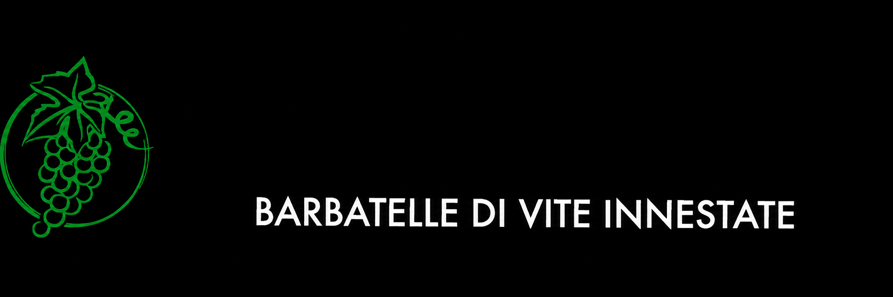

Usiamo i dati tecnici necessari al funzionamento. Con il tuo consenso possiamo anche misurare l’utilizzo e riconoscere le visite successive per migliorare il servizio.
SALVA PROGETTO
Li inserisci una volta sola e restano associati a questo progetto.